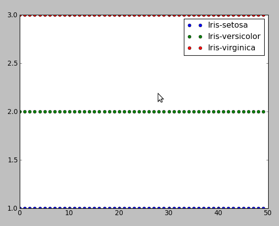

The first example shows the implementation of Fisher’s Linear Classifier for 2-class problem and this algorithm is precisely described in book “Pattern Recognition and Machine Learning” by Christopher M Bishop (p 186, Section 4.1). The main idea of this algorithm is that we try to reduce the dimensionality of input vector X and project it onto 1D space using the equation y=W.T X where W.T - row vector of weights, and we adjust the weight vector W and choose the projection that maximizes the class separation. The following program use the famouse data set Iris with 150 number of instances and 4 attributes (4D space), target vector which contains labels: “Iris-setosa”, “Iris-virginica”, “Iris-versicolor”, therefore, we have 3 classes, but, in this case, we may assume that we have class 1 with labels “Iris-setosa” and class 2 with other instances. Iris data set is available here: http://archive.ics.uci.edu/ml/datasets/Iris/ or here (comma separated format) - .. image:: LinearClassification_attachments/bezdekIris.data.txt
#! python
from __future__ import division
import numpy as np
import matplotlib.pyplot as plt
def read_data():
f=open("Iris.txt", 'r')
lines=[line.strip() for line in f.readlines()]
f.close()
lines=[line.split(",") for line in lines if line]
class1=np.array([line[:4] for line in lines if line[-1]=="Iris-setosa"], dtype
=np.float)
class2=np.array([line[:4] for line in lines if line[-1]!="Iris-setosa"], dtype
=np.float)
return class1, class2
def main():
class1, class2=read_data()
mean1=np.mean(class1, axis=0)
mean2=np.mean(class2, axis=0)
#calculate variance within class
Sw=np.dot((class1-mean1).T, (class1-mean1))+np.dot((class2-mean2).T, (class2-m
ean2))
#calculate weights which maximize linear separation
w=np.dot(np.linalg.inv(Sw), (mean2-mean1))
print "vector of max weights", w
#projection of classes on 1D space
plt.plot(np.dot(class1, w), [0]*class1.shape[0], "bo", label="Iris-setosa")
plt.plot(np.dot(class2, w), [0]*class2.shape[0], "go", label="Iris-versicolor
and Iris-virginica")
plt.legend()
plt.show()
main()
This program is the implementation of Probabilistic Generative Model for K-class problem which is also described in book “Pattern Recognition and Machine Learning” by Christopher M Bishop (p 196, Section 4.2). We try to learn the class-conditional densities (likelihood) p(x|Ck) for each class K, and prior probability density p(Ck), then we can compute posterior probability p(Ck|x) by using Bayes rule. Here we assume that p(x|Ck) are 4D Gaussians with parameters uk - mean vector of class K, Sk - covariance matrix of class K, also p(Ck) for all k is 1/3. Then we compute so called quantities ak (variables pc’s in the program) and if ak>>aj for all k!=j then assign p(Ck|x)=1 and p(Cj|x)=0.
#! python
from __future__ import division
import numpy as np
import matplotlib.pyplot as plt
import math
def read_data():
f=open("Iris.txt", 'r')
lines=[line.strip() for line in f.readlines()]
f.close()
lines=[line.split(",") for line in lines if line]
data=np.array([line[:4] for line in lines if line], dtype=np.float)
class1=np.array([line[:4] for line in lines if line[-1]=="Iris-setosa"], dtype
=np.float)
class2=np.array([line[:4] for line in lines if line[-1]=="Iris-virginica"], dt
ype=np.float)
class3=np.array([line[:4] for line in lines if line[-1]=="Iris-versicolor"], d
type=np.float)
#list of class labels
labels=[]
for line in lines:
strt=line.pop()
labels.append(strt)
#create array of labels
labels=[line.split(",") for line in labels if line]
t=np.zeros(shape=(150, 3))
#create target vector encoded according to 1-of-K scheme
for i in xrange(len(data)):
if labels[i]==["Iris-setosa"]: t[i][0]=1
elif labels[i]==["Iris-versicolor"]: t[i][1]=1
elif labels[i]==["Iris-virginica"]: t[i][2]=1
return class1, class2, class3, data, t
def gaussian(x, mean, cov):
xm=np.reshape((x-mean), (-1, 1))
px=1/(math.pow(2.0*math.pi, 2))*1/math.sqrt(np.linalg.det(cov))*math.exp(-(np.
dot(np.dot(xm.T, np.linalg.inv(cov)), xm))/2)
return px
def main():
class1, class2, class3, data, t=read_data()
count=np.zeros(shape=(150,1))
t_assigned=np.zeros(shape=(150, 3))
cov=np.zeros(shape=(3, 4, 4))
mean=np.zeros(shape=(3, 4))
#compute means for each class
mean1=class1.mean(axis=0)
mean2=class2.mean(axis=0)
mean3=class3.mean(axis=0)
#compute covariance matrices, such that the columns are variables and rows are
# observations of variables
cov1=np.cov(class1, rowvar=0)
cov2=np.cov(class2, rowvar=0)
cov3=np.cov(class3, rowvar=0)
#compute gaussian likelihood functions p(x|Ck) for each class
for i in xrange(len(data)):
px1=(1/3.0)*gaussian(data[i], mean1, cov1)
px2=(1/3.0)*gaussian(data[i], mean2, cov2)
px3=(1/3.0)*gaussian(data[i], mean3, cov3)
m=np.max([px1, px2, px3])
#compute posterior probability p(Ck|x) assuming that p(x|Ck) is gaussian and th
#e entire expression is wrapped by sigmoid function
pc1=((math.exp(px1)*math.exp(-m))*math.exp(m))/((math.exp(px2)*math.exp(-m)
+math.exp(px3)*math.exp(-m))*math.exp(m))
pc2=((math.exp(px2)*math.exp(-m))*math.exp(m))/((math.exp(px1)*math.exp(-m)
+math.exp(px3)*math.exp(-m))*math.exp(m))
pc3=((math.exp(px3)*math.exp(-m))*math.exp(m))/((math.exp(px1)*math.exp(-m)
+math.exp(px2)*math.exp(-m))*math.exp(m))
#assign p(Ck|x)=1 if p(Ck|x)>>p(Cj|x) for all j!=k
if pc1>pc2 and pc1>pc3: t_assigned[i][0]=1
elif pc3>pc1 and pc3>pc2: t_assigned[i][1]=1
elif pc2>pc1 and pc2>pc3: t_assigned[i][2]=1
#count the number of misclassifications
for j in xrange(3):
if t[i][j]-t_assigned[i][j]!=0: count[i]=1
cov=[cov1, cov2, cov3]
mean=[mean1, mean2, mean3]
t1=np.zeros(shape=(len(class1), 1))
t2=np.zeros(shape=(len(class2), 1))
t3=np.zeros(shape=(len(class3), 1))
for i in xrange(len(data)):
for j in xrange(len(class1)):
if t_assigned[i][0]==1: t1[j]=1
elif t_assigned[i][1]==1: t2[j]=2
elif t_assigned[i][2]==1: t3[j]=3
plt.plot(t1, "bo", label="Iris-setosa")
plt.plot(t2, "go", label="Iris-versicolor")
plt.plot(t3, "ro", label="Iris-virginica")
plt.legend()
plt.show()
print "number of misclassifications", sum(count), "assigned labels to data poin
ts", t_assigned, "target data", t
main()
This program resulted in the number of misclassifications = 3 out of all 150 instances
